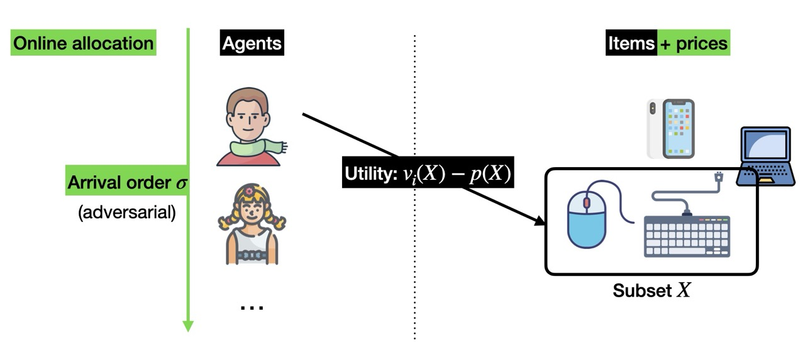

Samuel Boïté
Student at École polytechnique (X 2021) and ENS Paris-Saclay (MVA), I'm looking for an internship for spring 2025 leading to a PhD, and I'm open to teaching opportunities. Please do not hesitate to email me!
Education
ENS Paris-Saclay, Master in Mathematics, Vision and Learning (MVA) 2024-2025
Image Processing, Optimal Transport, Generative Models and Natural Language Processing.
École polytechnique, Engineer in Applied Mathematics 2021-2024
Optimization, Machine Learning, Stochastic Models and Algorithms.
Lycée Louis-le-Grand, Classes préparatoires (MPSI-MP*) 2019-2021
Research
Centro de Modelamiento Matemático (CMM), Research Intern Mar-Jul 2024
Online algorithms for combinatorial auctions, with J. Correa and A. Cristi. [+]
In online combinatorial auctions, m objects are assignable to n agents who arrive sequentially, in adversarial order. Each agent has a valuation for each possible bundle of objects. The aim is to distribute these objects on the fly to maximize global welfare. What fraction of the offline optimum can be guaranteed, e.g. assuming that the valuations are subadditive? I got partial results on this hard open problem for a low number of items and in the simplified context of max-min greedy matching. [defence slides]
Inria Saclay/CMAP, Research Assistant 2023-2024
Built tropical support vector machines with X. Allamigeon, S. Gaubert, and T. Molfessis. [+]
We developed max-margin SVMs with efficient training and inference, based on tropical geometry and mean payoff games, with theoretical guarantees for margin optimality, all-vs-all multi-class classification, and the ability to perform general piecewise linear classification. [repo]
Exotec, Software Intern Jun-Aug 2023
Doubled the speed of 6,000+ warehouse robots by developing a new autopilot. [+]
I designed, tested and deployed a blazing-fast C++ model predictive controller (MPC) for the Skypod® robot, enabling it to intelligently anticipate its trajectories and learn about its environment's imperfections. Using its physical model, the robot is now able to calculate where a series of commands will take it, and choose the best possible trajectory in the long run. Thanks to my controller, we were able to safely double the robots' maximum speed, enabling them to carry out far more orders for hundreds of customers in industry, healthcare, retail...
CMAP, Research Project 2022-2023
Simulated population dynamics with V. Bansaye, M. Breden and M. Grau. [+]
We studied the dynamics of two rival species, and observed that the cross-diffusion term in the SKT model induced spatial segregation at equilibrium. To this end, we developed a fast solver of the underlying non-linear differential equations. We then showed that this continuous model was the limit of a Markovian random process, which we also simulated. [repo] [pypi]

Teaching
- Oral examiner (colleur) in MP*4 and PSI* at Lycée Louis-le-Grand (2024-present).
- Tutor at École polytechnique, Convex Optimization and Optimal Control (2023).
- Mathematics tutor at Académie de Versailles (2023-2024).
- Educator at Apprentis d'Auteuil (civic service, 2021-2022).
Code: C++, Python, OCaml.
Languages: French, English and Spanish (proficient), Arabic (intermediate).